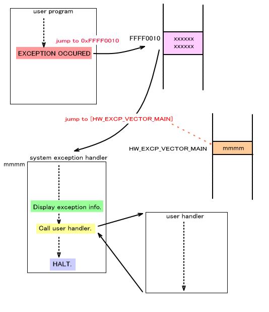

ここでは、ARM プロセッサによる例外が発生したときに TWL-SDK でその例外の情報を表示するための例外表示システムについて説明します。
ARM プロセッサには以下の例外が存在します。
| 例外タイプ | 正規ベクタアドレス | ハイベクタアドレス |
|---|---|---|
| リセット | 0x00000000 | 0xFFFF0000 |
| 未定義命令 | 0x00000004 | 0xFFFF0004 |
| ソフトウェア割り込み | 0x00000008 | 0xFFFF0008 |
| プリフェッチアボート | 0x0000000C | 0xFFFF000C |
| データアボート | 0x00000010 | 0xFFFF0010 |
| IRQ | 0x00000018 | 0xFFFF0018 |
| FIQ | 0x0000001C | 0xFFFF001C |
このうち、 リセット割り込みや FIQ 例外は、システムやデバッガで利用していますのでユーザは使用することは出来ません。
IRQ 例外は、割り込みとして利用しています。割り込みに関してはこちらを参照してください。→ 割り込み(概要)
未定義命令の中には、デバッガがブレイクポイントなどに使用しているものもあります。
例外が発生すると、上の表に記載されているベクタアドレスのアドレスに制御が移ります。通常はハイベクタアドレスを使用します。
ARM プロセッサの仕様で、例外ベクタのアドレスとして、0x00000000 〜 0x0000001C か 0xFFFF0000 〜 0xFFFF001C の何れかを選択できるようになっています。前者を「正規ベクタ」、後者を「ハイベクタ」と呼びます。
OS_SetExceptionVectorLower() で例外ベクタのアドレスを 0x0000000 〜 0x0000001C (正規ベクタ) にします。
OS_SetExceptionVectorUpper() で例外ベクタのアドレスを 0xFFFF0000 〜 0xFFFF001C ( ハイベクタ) にします。
TWL-SDK ではデフォルトではハイベクタを使用しています。特に理由がなければハイベクタを使用し、この設定は変更しないでください。
TWL-SDK には例外発生時に、その時点のコンテキスト(レジスタやCPUステータスの内容)
をデバッグウィンドウ(コンソール) へ表示する機構が用意されています。この例外表示機構の初期化は
OS_InitException() で行われますが、その関数は OS_Init() から呼ばれていますので OS_Init() を使用するアプリケーションでは特に準備は必要はありません。
以下は表示例です。OS_FPrintf() のエラー出力を用いて出力します。
**** Exception Occurred ****
R00=00000000 R01=12345678 R02=2000001F R03=02030340
R04=200000D7 R05=0000000F R06=00000001 R07=00000002
R08=02FFFFA8 R09=04000130 R10=00000001 R11=0201C25C
R12=0200E240 SP =02FE3750 LR =02005130 PC =02005140
CPSR=2000001F SPSR=00000000 CP15=0005707D
例外が発生したときに、ユーザが設定した例外ハンドラに制御を移すことが可能です。OS_SetUserExceptionHandler() でハンドラを登録してください。詳細はリファレンスを参照してください。
動作環境別で、例外発生時にデバッグウィンドウ(コンソール)へコンテキスト表示が行えるかどうかと、ユーザの例外ハンドラに制御を移すことが出来るかを示します。ただし
OK となっている箇所でも、FINALROM ビルドでは、OS_FPrintf() が使用できないので動作環境に依らず 例外時のコンテキスト表示は出来ません。ユーザの例外ハンドラの呼び出しは
ビルドに依存しません。
この表は動作環境で切り分けられていることにご注意ください。例えば、 HYBRID ROM を NITRO モードで動作させる場合、IS-TWL-DEBUGGER 上なら例外発生時のコンテキスト表示は行えませんが、同じ ROM を 同じモードで動作させても IS-NITRO-DEBUGGER 上なら表示可能です。
| NITRO モードの場合 |
||
|---|---|---|
| 動作環境 | 例外発生時のコンテキスト表示 |
ユーザの例外ハンドラの 呼び出し |
| DS実機 | N/A (コンソールが存在しない) | OK |
| TWL実機 | N/A (コンソールが存在しない) | OK |
| IS-NITRO-DEBUGGER | OK | OK |
| ENSATA EMULATOR | ??? | ??? |
| IS-TWL-DEBUGGER (一般開発用: ARM9) | N/A | N/A |
| IS-TWL-DEBUGGER (コンポーネント開発用 ARM9 + ARM7) | N/A | N/A |
| TWL モードの場合 |
||
| 動作環境 | 例外発生時のコンテキスト表示 |
ユーザの例外ハンドラの 呼び出し |
| TWL実機 | N/A (コンソールが存在しない) | OK |
| IS-TWL-DEBUGGER (一般開発用: ARM9) | N/A | N/A |
| IS-TWL-DEBUGGER (コンポーネント開発用 ARM9 + ARM7) | N/A | N/A |
例外が発生すると、例外ベクタの領域にジャンプします。例外ベクタは前述の通り、通常はハイベクタとなりますので、例えばデータアボート例外ならば 0xFFFFFF10 に制御が移ります。
次にシステム領域内の HW_EXCP_VECTOR_MAIN (0x2FFFFD9C) に格納されているアドレスに制御が移ります。 (ARM7 では専用ワークRAM のオフセット 0x7FDC の位置となります。) ここにはTWL-SDK の例外ハンドラのアドレスがセットされています。
TWL-SDK の例外ハンドラでは、例外時コンテキスト表示を行った後、あれば OS_SetUserExceptionHandler() で登録したユーザハンドラを 呼び出します。
そしてプログラムを停止します。

2008/04/18 例外時コンテキスト表示環境の表追加など
2005/03/08 用語統一 [割込み] → [割り込み]
2004/12/14 用語や語尾など修正
2004/11/16 初版